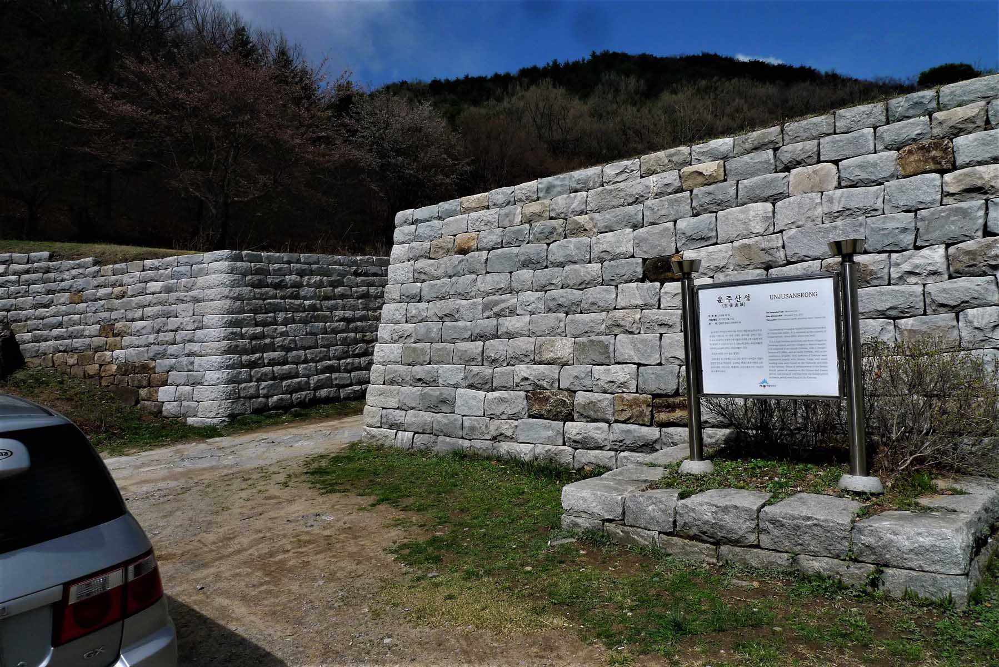

Ancient Fortress

This mountain containing the historical remnants of an ancient fortress (Seong or 성 translates to Fortress) dating back to
Baekje (백제) Period (18 BC to 660AD), is located within the SeJong (세종시) City limits. At the time of our hike in April 2018,
work was underway at the base of the mountain to develop this area into a national park and improve the area around this
mountain to make the area more user friendly as the population of the new nearby city of Sejong (세종시) continues to grow. It
is also a unique chance to learn more about the history of this region of Korea. This was most likely an important fortress
during the period when Shilla (신라) together with Tang dynasty of China was unifying all of Korea in the 7th century and in
any case was certainly an important military base during the Baekje (백제) period. From the Fortress walls there are extensive
views in all directions.
Fortress walls
During Baekje (백제) times the huge mountain fortress stretched over several villages in the area. The outside fortress walls
were 3098 meters in length and the inside fortress walls extended for 543 meters. The walls were made with stones which was
the building material of choice at that time due to their plentiful supply and strength. That much of the walls can be
walked along today is a testament to their construction techniques and strong will of the people of that period. One cannot
help but be impressed by the size of the stone structure. Inside the fortress area are some tombs that also date back to
Baekje (백제) times. During excavation much earthenware, ceramics and roof tiles dating from the Baejke period were recovered.
Also located on this mountain is the temple 고산사 which contains the temple bells referred to as 백제삼천범종. The temple is a place
to pray in order to comfort the spirits of former Baekje (백제) kings.
Hundreds of Pots
The trail that we took starts at a complex that includes an exclusive restaurant and a place that has many large ceramic
jars in which are stored Korean Traditional condiments such as KimChi (김치). The trail led up a very steep valley through the
woods which were still vacant of new leaves, though the path had still the remains of last year’s leaves covering them. The
location where we started was about 2 km from the peak. As usual in Korea, the trail was well defined and there were many
signs that could guide you at any of the trail intersections. To encourage families to hike in the woods there were many
strategically placed benches along the trail for resting. Along the way there were also signs telling about the history of
the area. Our trail skirted around the peak and finally led up to steps that were made with wood but eventually become stone
steps as we approached the summit.
Tower Monument
On the summit there is a large modern monument of granite shaped like a tower in a park like setting. Engraved on the
monument are the words “백제의 얼 상징탑” which roughly translates to “a tower that symbolizes the spirt of Baekje”, meaning the
enduring spirit of the people who were responsible for the construction of the fortress walls. Although the monument was
built to convey the spirit of loyalty and wisdom of the Baekje (백제) people to their descendants, its existence typifies the
honor which is still bestowed by the current Korean society on their ancestors. After looking over the summit area, which
incidentally is an ideal place for a lunch break, we followed the well-marked path that leads down to the ancient reservoir
that has the appearance of a large swimming pool. As we continued on, the great walls of the fortress came into view. These
were some of the most impressive fortress walls that I have seen in central Korea.
Cherry blossoms
From here there was a road to follow but we needed to be careful as this was an active road with many cars travelling in
both directions. Along the sides of the road were several beautiful flowering cherry trees proudly displaying their blossoms
for us to enjoy. At the bottom of this road there were signs that indicated the direction downward until eventually we
reached the Buddhist temple again then the parking area where the hike began. This hike is near to Daejeon, approx. 1 hour
and 10 minutes driving from our starting point of KAIST and is one of the most historic of the mountains in the vicinity of
the new city of SeJong which is approx. 20 minutes away by car. It is a good hike to plan for the spring as the trees are
quite beautiful when they are abundantly adored with blossoms. Despite a few steep patches it is not a hard hike, suitable
for families and the not so fit.